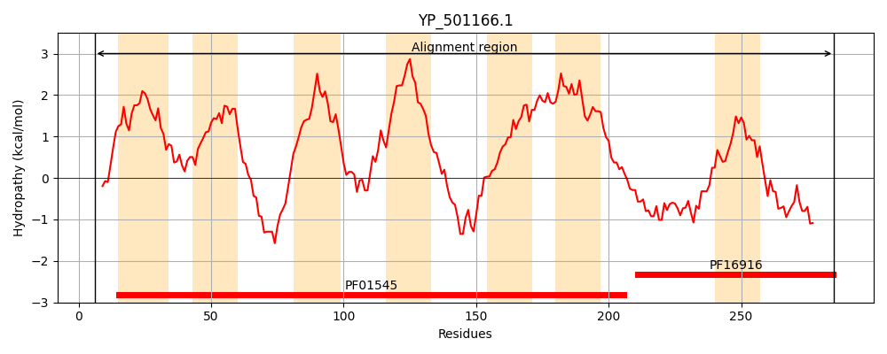
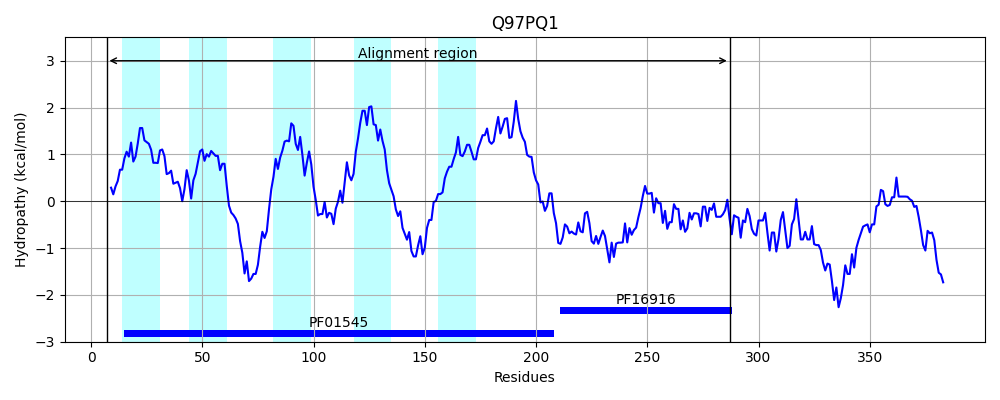
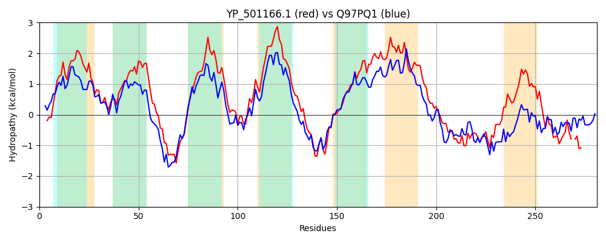

Hit Accession: Q97PQ1
Hit TCID: 2.A.4.7.6
Hit Description: gnl|BL_ORD_ID|17588 gnl|TC-DB|Q97PQ1|2.A.4.7.6 Cation efflux family protein OS=Streptococcus pneumoniae serotype 4 (strain ATCC BAA-334 / TIGR4) GN=SP_1552 PE=4 SV=1
Mach Len: 281
e:0.000000
Query TMS Count : 7
Hit TMS Count: 5
TMS-Overlap Score: 4.300000
Predicted Substrates:CHEBI:29035;manganese(2+)
BLAST Alignment:
Score: 590 , Bit scores: 231 bits, E-value: 3.9e-74, Alignment length: 281, Percentage identity: 39
Query: 6 NLKLAQRGAYLSLIVYIILSIVKYVTGFVFNSAAVRADALNNMTDIIVSLAVIIGLKISIKPADRNHPYGHLKSENISSLLVSFVIMFVGIQVVIQNAPRLFKEDDVVPNAITIIVSLISGLVMLIVFAVNQRLAKRTKSSSLNSAAKDNLSDSLVSIGTAIGLIFTQIGFPIVDIILATLLGLLIVYTGFGIFKEAIFMLSDGFNETELEAYRNDILEVDEVQEVKSIKGRYHGSSVFIDVTIVVDANLSLVEAHQICDNVEHHLHKK-GISSVYVHPEP 285
NLKLA+RGA +S+ Y+ILS K G + +S+++ AD NN++DII ++A++IG++++ +PADR+H +GH K E+++SL+ S ++ +VG V+ ++ ++ V + + + +IS +M +V+ N RL+K++ S++L +AAKDNLSD++ S+GTAI ++ + +PIVD ++A ++ I+ T + IF E+ F LSDGF++ LE Y+ I+E+ ++ +VKS +GR +GS++++D+T+ ++ +LS+ E+H+I D VE L ++ G+ VH EP
Sbjct: 7 NLKLAERGAIISISTYLILSAAKLAAGHLLHSSSLVADGFNNVSDIIGNVALLIGIRMARQPADRDHRFGHWKIEDLASLITSIIMFYVGFDVLRDTIQKILSREETVIDPLGATLGIISAAIMFVVYLYNTRLSKKSNSNALKAAAKDNLSDAVTSLGTAIAILASSFNYPIVDKLVAIIITFFILKTAYDIFIESSFSLSDGFDDRLLEDYQKAIMEIPKISKVKSQRGRTYGSNIYLDITLEMNPDLSVFESHEIADQVESMLEERFGVFDTDVHIEP 287 | Protein Hydropathy Plots: |
|---|
|  |  |
Pairwise Alignment-Hydropathy Plot:
|
|---|
|  |